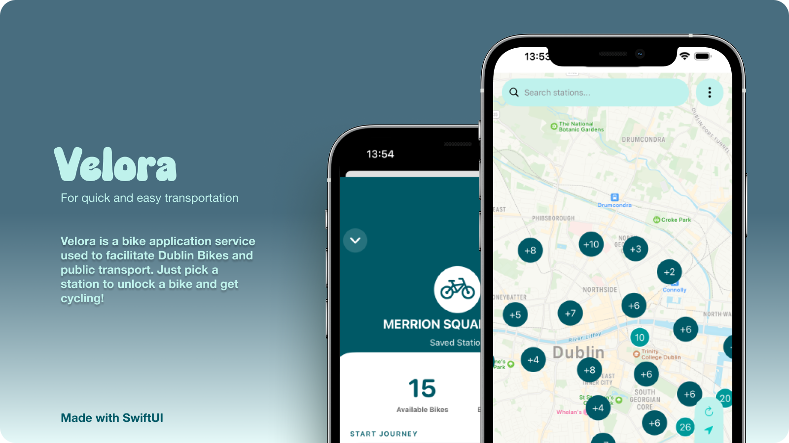
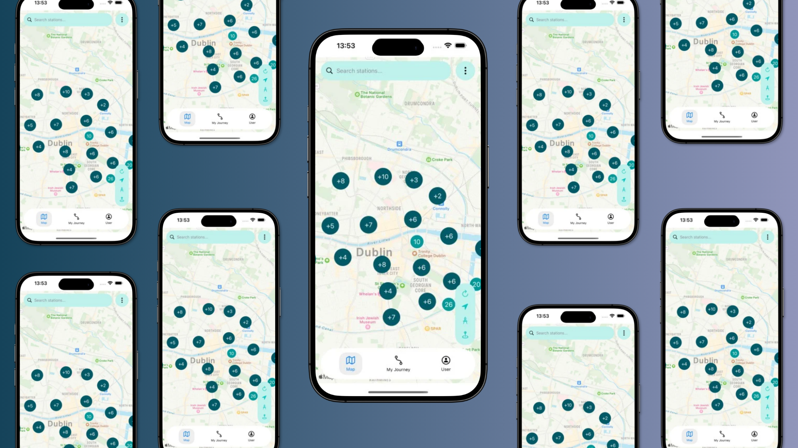

← BACK TO WORK
ROLE
Individual Project - Frontend Mobile Development
TIMELINE
March 2026 - May 2026
Focus
Swift · UI/UX · Accessibility · Responsive Design
TECH STACK
Swift, SwiftUI, UIKit, Core Data, REST APIs, Figma
Context
Everyone knows that Dublin's public bike-sharing network can be
challenging, especially when users need to locate nearby stations,
check bike availability and plan journeys efficiently.
With inaccessible station information, struggling to find
a convenient bike and navigating the city, the whole experience can become
less straightforward, which is less than ideal during busy commutes.
Developed as an individual project for my Mobile
Development module, 'Velora' explores how thoughtful
interface design and native iOS development can make
urban cycling more accessible. I shaped the app concept,
designed the user interface and developed the mobile
experience in Swift, translating live station data,
journey planning and sustainability tracking into
an intuitive and cohesive cycling companion.


MOBILE DEVELOPMENT
INDIVIDUAL PROJECT
UI/UX DESIGN
Github Repository →
Video Walkthrough →
The Problem
The idea for Velora began during my six-month Erasmus
placement in Antwerp, Belgium. Bordering the Netherlands,
the city has a strong cycling culture, and I quickly fell
in love with how accessible its public transport and
bike-sharing systems were. For a one-off €50 payment,
I could collect a bike right outside my doorstep and
cycle almost everywhere. By the end of my placement,
I had completed 385 rides, making cycling an integral
part of my everyday life.
Returning to Ireland, I was inspired to try Dublin's
public bike-sharing system during a trip to Phoenix Park
with a few friends. However, the experience felt considerably
less intuitive than what I had grown accustomed to in
Belgium. The pricing was expensive and unclear and I
accidentally unlocked an electric bike on my first
attempt without fully understanding the selection.
When it came time to finish my journey, I struggled
to locate a nearby station where I could return it.
Having experienced how seamlessly cycling could fit
into everyday life abroad, I began questioning why
Dublin's equivalent felt so difficult to navigate.
Finding nearby stations, understanding bike options
and planning journeys should feel straightforward,
rather than introducing unnecessary friction into
an otherwise convenient and sustainable way to travel.
Our design brief: How might we design an intuitive iOS cycling companion that
encourages sustainable urban mobility, improves access to Dublin's bike-sharing network, and
supports the United Nations Sustainable Development Goals?
This experience inspired Velora: an iOS cycling
companion designed to make Dublin's bike-sharing
network easier to understand and use. By bringing
station discovery, proximity-based search, journey
tracking and sustainability insights into one
intuitive interface, I wanted to create an experience
that encouraged more people to explore the city by bike.
Research
My research focused on exploring Dublin's existing
bike-sharing services and identifying opportunities
to improve the overall user experience. I looked at
RedClick DublinBikes specifically to understand how the service
presents station locations, bike availability and
rental options, using my own experience with the
system to inform the initial design direction.
To put the project into context, I explored publicly
available cycling statistics and developed an initial
Figma mock-up to visualise how a more intuitive
cycling companion could work:
1.97M
DublinBikes journeys were recorded in 2025,
highlighting the scale of the city's existing
public bike-sharing network.
34%
of Dublin Metropolitan Area residents wanted
to cycle more in the future, according to the
2025 Walking and Cycling Index.
116
stations serve the DublinBikes network, making
clear station discovery and accessible location
information important considerations for the
mobile experience.
Solution
To address the frustration I experienced with Dublin's
bike-sharing platform, I developed Velora, a native
iOS cycling companion designed to make finding bikes,
navigating stations and tracking journeys more
intuitive. Combining a clean interface with station
discovery, personalised features and journey management,
the app aims to make cycling around Dublin feel more
accessible and straightforward.
1. Interactive Map & Station Clustering:
The core experience centres around an interactive map
displaying nearby bike stations. I implemented MapKit
clustering to group stations when zoomed out, reducing
visual clutter and rendering overhead. As users zoom
in, clusters separate into individual station markers,
keeping the map readable while prioritising performance
as the volume of displayed data increases.
2. Personalised Station Discovery:
Using CoreLocation, I designed a station search
experience that prioritises nearby locations, alongside
the ability to favourite stations for quicker access.
This allows users to keep track of preferred pickup
and return points without repeatedly searching the
entire network. Clear station information and floating
map controls further simplify navigation.
3. Intuitive Journey Tracking:
I developed a custom swipe-to-unlock gesture for
starting journeys, creating a more deliberate
interaction than a standard tap button. The app also
tracks completed journeys and displays personal
cycling activity through a profile dashboard, including
estimated environmental savings. Together, these
features connect everyday journey management with
a broader focus on sustainable urban travel.
Developed individually in Swift using
SwiftUI and UIKit, Velora combined interface
design in Figma with native iOS development. A key
technical focus was map performance and optimisation,
particularly managing station markers and location
updates to minimise unnecessary rendering and keep
interactions responsive. The result is a cycling
companion built around accessible navigation,
personalised discovery and a more engaging journey
experience.
View GitHub Repository →
Reflection
Upon reflection, developing a native iOS application
taught me how to balance technical performance with
intuitive user experiences. Working with interactive
maps, location-based functionality and station data
highlighted the importance of optimisation, particularly
when handling dense map markers and frequent updates.
If there was something I could improve or do differently,
I would prioritise prototyping and usability testing
earlier in the process, allowing me to gather feedback
on station discovery, favouriting and journey tracking
before committing to the final implementation.
In the future, I would love to continue developing
Velora by refining journey planning, improving station
availability insights and expanding notifications
around completed rides. I would also explore further
accessibility testing and more detailed sustainability
metrics to help users understand the environmental
impact of their journeys. Overall, this project
strengthened my skills in Swift development, UI/UX
design and performance optimisation, while teaching
me how thoughtful design decisions can make everyday
technology more accessible and enjoyable to use.